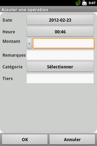
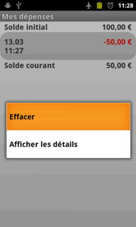

"Ajouter une opération" vous ouvre la fenêtre pour créer une opération :

Fixez la date et l'heure, cliquez sur le bouton "-" pour basculer entre dépense ou entrée, entrez la somme, une remarque et un tiers. Cliquez sur le bouton "Sélectionner" vous ouvre la fenêtre "Sélectionner une catégorie". Nous vous expliquerons plus tard comment gérer les catégories.
Sur la liste des opérations, vous pouvez éditer chaque opération avec un clic court, le menu contextuel vous permet aussi d'effacer une opération ou d'afficher tous ses détails (tiers, remarques).
